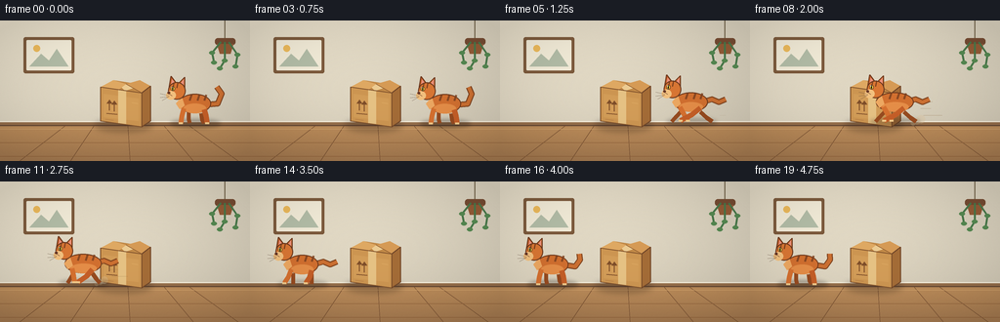
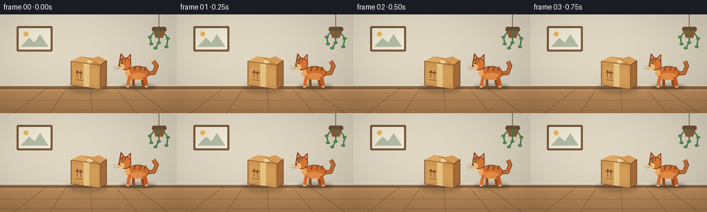

CODING AGENTS AS PIXEL WORLD MODELS
traex/GPT-5.6-Sol · dynamic_spatial_relationship_0007
点击播放 · 原生 RGB 像素
逐轮保存的候选
回放视频、检查图与代码变化。
每份候选均可单独播放。实际图片检查记录在下方工具轨迹中。
候选 01播放与检查图
点击播放 · 原生 RGB 像素


展开代码变化
--- 上一保存版本
+++ 本次保存版本
@@ -0,0 +1,233 @@
+from pathlib import Path
+import math
+import json
+import numpy as np
+from PIL import Image, ImageDraw, ImageFilter
+import artifact_io
+
+CASE_DIR = Path(__file__).resolve().parent
+spec = json.loads((CASE_DIR / 'task_spec.json').read_text())
+W, H, N = spec['width'], spec['height'], spec['frames']
+S = 4
+SW, SH = W*S, H*S
+rng = np.random.default_rng(7007)
+
+def P(points):
+ return [(int(round(x*S)), int(round(y*S))) for x,y in points]
+def B(box):
+ return tuple(int(round(v*S)) for v in box)
+def line(d, points, fill, width, joint='curve'):
+ d.line(P(points), fill=fill, width=max(1,int(width*S)), joint=joint)
+def ellipse(d, box, fill, outline=None, width=1):
+ d.ellipse(B(box), fill=fill, outline=outline, width=max(1,int(width*S)))
+def polygon(d, points, fill, outline=None):
+ d.polygon(P(points), fill=fill)
+ if outline:
+ line(d, points+[points[0]], outline, 1)
+def rounded(d, box, radius, fill, outline=None, width=1):
+ d.rounded_rectangle(B(box), radius=int(radius*S), fill=fill, outline=outline, width=max(1,int(width*S)))
+
+def background():
+ yy, xx = np.mgrid[0:SH,0:SW]
+ # warm plaster wall and sunlit wood floor
+ arr = np.empty((SH,SW,3), dtype=np.float32)
+ wall = yy < 106*S
+ ywall = yy/(106*S)
+ light = 1.0 - 0.055*ywall + 0.025*np.cos(xx/(SW)*math.pi)
+ base = np.array([231,222,201],np.float32)
+ arr[:] = base
+ arr *= light[...,None]
+ yf = np.clip((yy-106*S)/(38*S),0,1)
+ floor_base = np.stack([190-24*yf, 142-19*yf, 91-10*yf],axis=-1)
+ arr[~wall] = floor_base[~wall]
+ # very subtle plaster grain, fixed across frames
+ noise = rng.normal(0,1.35,(SH,SW,1))
+ arr += noise
+ return Image.fromarray(np.uint8(np.clip(arr,0,255)),'RGB')
+
+BG = background()
+
+def draw_room(im):
+ d=ImageDraw.Draw(im)
+ # baseboard and seam
+ d.rectangle(B((0,103,256,108)), fill=(151,112,76))
+ d.rectangle(B((0,103,256,104)), fill=(246,238,219))
+ d.rectangle(B((0,107,256,108)), fill=(105,75,54))
+ # framed minimal picture high on left; kept subdued
+ rounded(d,(24,17,76,54),2,(126,91,61),None)
+ rounded(d,(27,20,73,51),1,(245,238,218),None)
+ polygon(d,[(30,47),(42,34),(50,41),(58,29),(70,47)],(181,191,169))
+ ellipse(d,(34,25,41,32),(239,188,92))
+ # soft hanging plant on far right to give depth
+ line(d,[(230,0),(230,22)],(110,94,68),1)
+ rounded(d,(220,18,241,25),3,(120,77,51))
+ polygon(d,[(222,24),(239,24),(236,34),(225,34)],(151,93,55))
+ for pts in [[(226,22),(217,33),(219,43)],[(230,22),(230,41),(225,49)],[(234,22),(243,35),(241,47)]]:
+ line(d,pts,(74,123,76),2)
+ for x,y in pts[1:]: ellipse(d,(x-3,y-2,x+3,y+2),(87,139,83))
+ # wooden floor plank seams and soft highlights
+ for x in [20,72,133,198,244]:
+ line(d,[(128+(x-128)*0.57,108),(x,144)],(117,78,48),0.65)
+ line(d,[(0,125),(256,125)],(146,99,59),0.6)
+ line(d,[(0,139),(256,139)],(145,98,58),0.6)
+ line(d,[(0,111),(256,111)],(214,167,111),0.6)
+
+def draw_box(im):
+ d=ImageDraw.Draw(im)
+ # grounded soft shadow
+ sh=Image.new('RGBA',(SW,SH),(0,0,0,0)); sd=ImageDraw.Draw(sh)
+ sd.ellipse(B((97,101,156,114)),fill=(55,35,22,75))
+ sh=sh.filter(ImageFilter.GaussianBlur(3*S)); im.paste(sh,(0,0),sh)
+ d=ImageDraw.Draw(im)
+ # side panel and front panel
+ polygon(d,[(103,68),(116,61),(154,67),(145,74)],(194,138,72))
+ polygon(d,[(145,74),(154,67),(154,103),(145,109)],(164,108,55))
+ polygon(d,[(103,68),(145,74),(145,109),(103,103)],(205,150,82))
+ # front subtle gradient-like broad strips
+ polygon(d,[(106,75),(142,80),(142,103),(106,99)],(211,157,88))
+ # taped center strip
+ polygon(d,[(121,71),(129,72),(129,106),(121,105)],(230,194,132))
+ polygon(d,[(120,64),(129,65),(137,69),(128,72)],(237,204,146))
+ # top flaps and dark central joint
+ polygon(d,[(103,68),(116,61),(129,65),(121,71)],(223,169,99))
+ polygon(d,[(129,65),(143,61),(154,67),(145,74)],(214,155,86))
+ line(d,[(129,65),(145,74)],(139,89,46),0.8)
+ line(d,[(103,68),(145,74),(145,109),(103,103),(103,68)],(124,79,43),1.0)
+ line(d,[(145,74),(154,67),(154,103),(145,109)],(113,70,40),1.0)
+ # handling symbol, simple upright arrows, no text
+ line(d,[(112,92),(112,82)],(126,78,42),1.2)
+ polygon(d,[(109,85),(112,81),(115,85)],(126,78,42))
+ line(d,[(117,93),(117,83)],(126,78,42),1.2)
+ polygon(d,[(114,86),(117,82),(120,86)],(126,78,42))
+ line(d,[(109,95),(120,96)],(126,78,42),1)
+ # paper edge scratches
+ line(d,[(135,84),(141,85)],(231,182,111),0.7)
+ line(d,[(108,101),(116,102)],(164,108,58),0.5)
+
+def cat_position(i):
+ if i <= 4:
+ return 199.0, 'idle', 0.0
+ if i <= 14:
+ u=(i-4)/10.0
+ ease=u*u*(3-2*u)
+ return 199.0+(53.0-199.0)*ease, 'run', u
+ return 53.0, 'landed', (i-14)/5.0
+
+def draw_dust_and_speed(im,x,i,mode,u):
+ if mode!='run' or u<0.07 or u>0.97: return
+ d=ImageDraw.Draw(im,'RGBA')
+ # short motion accents trailing behind (to the right), strongest mid-run
+ strength=math.sin(math.pi*u)
+ for k,(dy,L) in enumerate([(83,16),(90,11),(97,20)]):
+ xa=x+24+k*3
+ line(d,[(xa,dy),(xa+L*strength,dy)],(142,105,66,int(90*strength)),0.7)
+ # dust puffs at rear paw
+ puffx=x+15+5*math.sin(i*1.7)
+ for k in range(3):
+ r=(2.5+k)*strength
+ ellipse(d,(puffx+k*4-r,105-k*2-r,puffx+k*4+r,105-k*2+r),(220,196,157,int(95*strength)))
+
+def draw_cat(im,x,i,mode,u):
+ # Cat is always side-on and facing left. Its body center is x.
+ d=ImageDraw.Draw(im,'RGBA')
+ run = mode=='run'
+ speed = math.sin(math.pi*u) if run else 0
+ phase = 2*math.pi*(u*3.0) if run else 0
+ bob = (-1.6*abs(math.sin(phase))) if run else (0.35*math.sin(i*0.7) if mode=='idle' else 0.6*math.exp(-u*4)*math.sin(u*12))
+ stretch = 3.0*speed
+ y=105+bob
+ # contact shadow follows cat
+ sh=Image.new('RGBA',(SW,SH),(0,0,0,0)); sd=ImageDraw.Draw(sh)
+ sd.ellipse(B((x-25,y-4,x+27,y+5)),fill=(39,29,20,80 if not run else 62))
+ sh=sh.filter(ImageFilter.GaussianBlur(int(2.2*S))); im.paste(sh,(0,0),sh)
+ d=ImageDraw.Draw(im,'RGBA')
+ # tail behind body: expressive, streaming backward while running
+ if run:
+ tail=[(x+12,y-20),(x+22,y-23),(x+29,y-20),(x+36,y-23)]
+ elif mode=='idle':
+ wag=2*math.sin(i*.55)
+ tail=[(x+12,y-19),(x+24,y-20),(x+28,y-30),(x+23+wag,y-37)]
+ else:
+ wag=1.5*math.sin(i*.8)
+ tail=[(x+12,y-20),(x+24,y-18),(x+29,y-25),(x+28+wag,y-31)]
+ line(d,tail,(126,67,31,255),6.0)
+ line(d,tail,(204,112,50,255),4.2)
+ # legs on far side (darker). Running uses alternating reach.
+ hipF=x-9; hipH=x+10
+ if run:
+ a=math.sin(phase)
+ b=-a
+ far_front=[(hipF,y-11),(hipF+7*b,y-4),(hipF+11*b,y)]
+ far_hind=[(hipH,y-10),(hipH+7*a,y-4),(hipH+13*a,y)]
+ else:
+ far_front=[(hipF+3,y-11),(hipF+3,y-4),(hipF+4,y)]
+ far_hind=[(hipH-3,y-10),(hipH-2,y-3),(hipH,y)]
+ line(d,far_front,(151,75,32,255),4.0)
+ line(d,far_hind,(151,75,32,255),4.4)
+ # body
+ ellipse(d,(x-16-stretch,y-30,x+17+stretch,y-10),(210,112,48,255),(113,60,31,255),1)
+ # lighter belly
+ ellipse(d,(x-11-stretch*.5,y-20,x+12+stretch,y-10),(230,142,72,255))
+ # tabby body stripes
+ for off in [-3,5,12]:
+ line(d,[(x+off,y-29),(x+off-2,y-23)],(127,66,32,220),2)
+ # near legs, crisp and readable
+ if run:
+ a=math.sin(phase)
+ front=[(x-11,y-15),(x-14+8*a,y-7),(x-18+16*a,y-1)]
+ hind=[(x+10,y-14),(x+8-7*a,y-7),(x+4-15*a,y-1)]
+ else:
+ # four-paw standing pose
+ front=[(x-11,y-15),(x-13,y-7),(x-14,y)]
+ hind=[(x+10,y-14),(x+12,y-7),(x+13,y)]
+ line(d,front,(215,113,48,255),5.2)
+ line(d,hind,(198,95,40,255),5.4)
+ # cream paws
+ ex,ey=front[-1]; line(d,[(ex-2,ey),(ex+2,ey)],(244,203,139,255),2.2)
+ ex,ey=hind[-1]; line(d,[(ex-2,ey),(ex+2,ey)],(244,203,139,255),2.2)
+ # neck/chest tuft
+ polygon(d,[(x-13,y-27),(x-19,y-20),(x-15,y-14),(x-10,y-18)],(238,169,98,255))
+ # head at leading (left) edge
+ hx=x-18-stretch*.35; hy=y-31
+ # ears behind skull
+ polygon(d,[(hx-8,hy-5),(hx-6,hy-17),(hx,hy-9)],(197,94,39,255),(109,56,29,255))
+ polygon(d,[(hx+2,hy-10),(hx+8,hy-16),(hx+8,hy-4)],(207,108,47,255),(109,56,29,255))
+ polygon(d,[(hx-6,hy-8),(hx-5,hy-14),(hx-1,hy-9)],(236,146,126,255))
+ polygon(d,[(hx+4,hy-10),(hx+7,hy-14),(hx+7,hy-7)],(236,146,126,255))
+ ellipse(d,(hx-9,hy-11,hx+9,hy+7),(218,119,52,255),(108,57,30,255),1)
+ # forehead stripes
+ line(d,[(hx-3,hy-10),(hx-4,hy-5)],(119,61,30,230),1.3)
+ line(d,[(hx+1,hy-10),(hx,hy-5)],(119,61,30,230),1.3)
+ # muzzle projects left
+ ellipse(d,(hx-11,hy-2,hx-1,hy+7),(244,194,128,255))
+ ellipse(d,(hx-9.7,hy-1.2,hx-6.8,hy+1.3),(103,55,39,255))
+ # bright readable eye, looking left
+ ellipse(d,(hx-6.3,hy-6.5,hx-2.0,hy-2.0),(246,205,68,255),(71,43,26,255),0.7)
+ ellipse(d,(hx-4.8,hy-6.2,hx-3.8,hy-2.3),(30,27,21,255))
+ ellipse(d,(hx-5.5,hy-6.0,hx-4.7,hy-5.2),(255,255,238,255))
+ # whiskers and mouth
+ line(d,[(hx-8,hy+3),(hx-17,hy+1)],(92,70,55,210),0.55)
+ line(d,[(hx-8,hy+4),(hx-17,hy+5)],(92,70,55,210),0.55)
+ line(d,[(hx-8,hy+4),(hx-15,hy+8)],(92,70,55,180),0.5)
+ line(d,[(hx-8,hy+1),(hx-5,hy+3)],(90,46,34,230),0.6)
+
+def make_frame(i):
+ im=BG.copy()
+ draw_room(im)
+ draw_box(im)
+ x,mode,u=cat_position(i)
+ draw_dust_and_speed(im,x,i,mode,u)
+ draw_cat(im,x,i,mode,u)
+ # gentle vignette makes central action pop
+ a=np.asarray(im).astype(np.float32)
+ yy,xx=np.mgrid[0:SH,0:SW]
+ nx=(xx-SW/2)/(SW/2); ny=(yy-SH/2)/(SH/2)
+ vig=np.clip(1-0.075*(nx*nx+ny*ny),.87,1.0)
+ a*=vig[...,None]
+ im=Image.fromarray(np.uint8(np.clip(a,0,255)))
+ im=im.resize((W,H),Image.Resampling.LANCZOS)
+ return np.asarray(im,dtype=np.uint8)
+
+frames=np.stack([make_frame(i) for i in range(N)],axis=0)
+artifact_io.save(frames, CASE_DIR)
+print(f'saved {frames.shape} {frames.dtype}; cat moves from right to left of the box')
可观测工具轨迹
实际执行的命令与返回图片。
命令 1exit 0
/bin/bash -lc "cat prompt.txt && printf '\\n---RULES---\\n' && cat GENERATION_RULES.md && printf '\\n---SPEC---\\n' && cat task_spec.json"
命令 2exit 0
/bin/bash -lc "find . -maxdepth 2 -type f -printf '%p\\n' | sort"
命令 3exit 0
/bin/bash -lc 'cat artifact_io.py'
命令 4exit 0
/bin/bash -lc "cat > generate.py <<'PY'
from pathlib import Path
import math
import json
import numpy as np
from PIL import Image, ImageDraw, ImageFilter
import artifact_io
CASE_DIR = Path(__file__).resolve().parent
spec = json.loads((CASE_DIR / 'task_spec.json').read_text())
W, H, N = spec['width'], spec['height'], spec['frames']
S = 4
SW, SH = W*S, H*S
rng = np.random.default_rng(7007)
def P(points):
return [(int(round(x*S)), int(round(y*S))) for x,y in points]
def B(box):
return tuple(int(round(v*S)) for v in box)
def line(d, points, fill, width, joint='curve'):
d.line(P(points), fill=fill, width=max(1,int(width*S)), joint=joint)
def ellipse(d, box, fill, outline=None, width=1):
d.ellipse(B(box), fill=fill, outline=outline, width=max(1,int(width*S)))
def polygon(d, points, fill, outline=None):
d.polygon(P(points), fill=fill)
if outline:
line(d, points+[points[0]], outline, 1)
def rounded(d, box, radius, fill, outline=None, width=1):
d.rounded_rectangle(B(box), radius=int(radius*S), fill=fill, outline=outline, width=max(1,int(width*S)))
def background():
yy, xx = np.mgrid[0:SH,0:SW]
# warm plaster wall and sunlit wood floor
arr = np.empty((SH,SW,3), dtype=np.float32)
wall = yy < 106*S
ywall = yy/(106*S)
light = 1.0 - 0.055*ywall + 0.025*np.cos(xx/(SW)*math.pi)
base = np.array([231,222,201],np.float32)
arr[:] = base
arr *= light[...,None]
yf = np.clip((yy-106*S)/(38*S),0,1)
floor_base = np.stack([190-24*yf, 142-19*yf, 91-10*yf],axis=-1)
arr[~wall] = floor_base[~wall]
# very subtle plaster grain, fixed across frames
noise = rng.normal(0,1.35,(SH,SW,1))
arr += noise
return Image.fromarray(np.uint8(np.clip(arr,0,255)),'RGB')
BG = background()
def draw_room(im):
d=ImageDraw.Draw(im)
# baseboard and seam
d.rectangle(B((0,103,256,108)), fill=(151,112,76))
d.rectangle(B((0,103,256,104)), fill=(246,238,219))
d.rectangle(B((0,107,256,108)), fill=(105,75,54))
# framed minimal picture high on left; kept subdued
rounded(d,(24,17,76,54),2,(126,91,61),None)
rounded(d,(27,20,73,51),1,(245,238,218),None)
polygon(d,[(30,47),(42,34),(50,41),(58,29),(70,47)],(181,191,169))
ellipse(d,(34,25,41,32),(239,188,92))
# soft hanging plant on far right to give depth
line(d,[(230,0),(230,22)],(110,94,68),1)
rounded(d,(220,18,241,25),3,(120,77,51))
polygon(d,[(222,24),(239,24),(236,34),(225,34)],(151,93,55))
for pts in [[(226,22),(217,33),(219,43)],[(230,22),(230,41),(225,49)],[(234,22),(243,35),(241,47)]]:
line(d,pts,(74,123,76),2)
for x,y in pts[1:]: ellipse(d,(x-3,y-2,x+3,y+2),(87,139,83))
# wooden floor plank seams and soft highlights
for x in [20,72,133,198,244]:
line(d,[(128+(x-128)*0.57,108),(x,144)],(117,78,48),0.65)
line(d,[(0,125),(256,125)],(146,99,59),0.6)
line(d,[(0,139),(256,139)],(145,98,58),0.6)
line(d,[(0,111),(256,111)],(214,167,111),0.6)
def draw_box(im):
d=ImageDraw.Draw(im)
# grounded soft shadow
sh=Image.new('RGBA',(SW,SH),(0,0,0,0)); sd=ImageDraw.Draw(sh)
sd.ellipse(B((97,101,156,114)),fill=(55,35,22,75))
sh=sh.filter(ImageFilter.GaussianBlur(3*S)); im.paste(sh,(0,0),sh)
d=ImageDraw.Draw(im)
# side panel and front panel
polygon(d,[(103,68),(116,61),(154,67),(145,74)],(194,138,72))
polygon(d,[(145,74),(154,67),(154,103),(145,109)],(164,108,55))
polygon(d,[(103,68),(145,74),(145,109),(103,103)],(205,150,82))
# front subtle gradient-like broad strips
polygon(d,[(106,75),(142,80),(142,103),(106,99)],(211,157,88))
# taped center strip
polygon(d,[(121,71),(129,72),(129,106),(121,105)],(230,194,132))
polygon(d,[(120,64),(129,65),(137,69),(128,72)],(237,204,146))
# top flaps and dark central joint
polygon(d,[(103,68),(116,61),(129,65),(121,71)],(223,169,99))
polygon(d,[(129,65),(143,61),(154,67),(145,74)],(214,155,86))
line(d,[(129,65),(145,74)],(139,89,46),0.8)
line(d,[(103,68),(145,74),(145,109),(103,103),(103,68)],(124,79,43),1.0)
line(d,[(145,74),(154,67),(154,103),(145,109)],(113,70,40),1.0)
# handling symbol, simple upright arrows, no text
line(d,[(112,92),(112,82)],(126,78,42),1.2)
polygon(d,[(109,85),(112,81),(115,85)],(126,78,42))
line(d,[(117,93),(117,83)],(126,78,42),1.2)
polygon(d,[(114,86),(117,82),(120,86)],(126,78,42))
line(d,[(109,95),(120,96)],(126,78,42),1)
# paper edge scratches
line(d,[(135,84),(141,85)],(231,182,111),0.7)
line(d,[(108,101),(116,102)],(164,108,58),0.5)
def cat_position(i):
if i <= 4:
return 199.0, 'idle', 0.0
if i <= 14:
u=(i-4)/10.0
ease=u*u*(3-2*u)
return 199.0+(53.0-199.0)*ease, 'run', u
return 53.0, 'landed', (i-14)/5.0
def draw_dust_and_speed(im,x,i,mode,u):
if mode"'!='"'run' or u<0.07 or u>0.97: return
d=ImageDraw.Draw(im,'RGBA')
# short motion accents trailing behind (to the right), strongest mid-run
strength=math.sin(math.pi*u)
for k,(dy,L) in enumerate([(83,16),(90,11),(97,20)]):
xa=x+24+k*3
line(d,[(xa,dy),(xa+L*strength,dy)],(142,105,66,int(90*strength)),0.7)
# dust puffs at rear paw
puffx=x+15+5*math.sin(i*1.7)
for k in range(3):
r=(2.5+k)*strength
ellipse(d,(puffx+k*4-r,105-k*2-r,puffx+k*4+r,105-k*2+r),(220,196,157,int(95*strength)))
def draw_cat(im,x,i,mode,u):
# Cat is always side-on and facing left. Its body center is x.
d=ImageDraw.Draw(im,'RGBA')
run = mode=='run'
speed = math.sin(math.pi*u) if run else 0
phase = 2*math.pi*(u*3.0) if run else 0
bob = (-1.6*abs(math.sin(phase))) if run else (0.35*math.sin(i*0.7) if mode=='idle' else 0.6*math.exp(-u*4)*math.sin(u*12))
stretch = 3.0*speed
y=105+bob
# contact shadow follows cat
sh=Image.new('RGBA',(SW,SH),(0,0,0,0)); sd=ImageDraw.Draw(sh)
sd.ellipse(B((x-25,y-4,x+27,y+5)),fill=(39,29,20,80 if not run else 62))
sh=sh.filter(ImageFilter.GaussianBlur(int(2.2*S))); im.paste(sh,(0,0),sh)
d=ImageDraw.Draw(im,'RGBA')
# tail behind body: expressive, streaming backward while running
if run:
tail=[(x+12,y-20),(x+22,y-23),(x+29,y-20),(x+36,y-23)]
elif mode=='idle':
wag=2*math.sin(i*.55)
tail=[(x+12,y-19),(x+24,y-20),(x+28,y-30),(x+23+wag,y-37)]
else:
wag=1.5*math.sin(i*.8)
tail=[(x+12,y-20),(x+24,y-18),(x+29,y-25),(x+28+wag,y-31)]
line(d,tail,(126,67,31,255),6.0)
line(d,tail,(204,112,50,255),4.2)
# legs on far side (darker). Running uses alternating reach.
hipF=x-9; hipH=x+10
if run:
a=math.sin(phase)
b=-a
far_front=[(hipF,y-11),(hipF+7*b,y-4),(hipF+11*b,y)]
far_hind=[(hipH,y-10),(hipH+7*a,y-4),(hipH+13*a,y)]
else:
far_front=[(hipF+3,y-11),(hipF+3,y-4),(hipF+4,y)]
far_hind=[(hipH-3,y-10),(hipH-2,y-3),(hipH,y)]
line(d,far_front,(151,75,32,255),4.0)
line(d,far_hind,(151,75,32,255),4.4)
# body
ellipse(d,(x-16-stretch,y-30,x+17+stretch,y-10),(210,112,48,255),(113,60,31,255),1)
# lighter belly
ellipse(d,(x-11-stretch*.5,y-20,x+12+stretch,y-10),(230,142,72,255))
# tabby body stripes
for off in [-3,5,12]:
line(d,[(x+off,y-29),(x+off-2,y-23)],(127,66,32,220),2)
# near legs, crisp and readable
if run:
a=math.sin(phase)
front=[(x-11,y-15),(x-14+8*a,y-7),(x-18+16*a,y-1)]
hind=[(x+10,y-14),(x+8-7*a,y-7),(x+4-15*a,y-1)]
else:
# four-paw standing pose
front=[(x-11,y-15),(x-13,y-7),(x-14,y)]
hind=[(x+10,y-14),(x+12,y-7),(x+13,y)]
line(d,front,(215,113,48,255),5.2)
line(d,hind,(198,95,40,255),5.4)
# cream paws
ex,ey=front[-1]; line(d,[(ex-2,ey),(ex+2,ey)],(244,203,139,255),2.2)
ex,ey=hind[-1]; line(d,[(ex-2,ey),(ex+2,ey)],(244,203,139,255),2.2)
# neck/chest tuft
polygon(d,[(x-13,y-27),(x-19,y-20),(x-15,y-14),(x-10,y-18)],(238,169,98,255))
# head at leading (left) edge
hx=x-18-stretch*.35; hy=y-31
# ears behind skull
polygon(d,[(hx-8,hy-5),(hx-6,hy-17),(hx,hy-9)],(197,94,39,255),(109,56,29,255))
polygon(d,[(hx+2,hy-10),(hx+8,hy-16),(hx+8,hy-4)],(207,108,47,255),(109,56,29,255))
polygon(d,[(hx-6,hy-8),(hx-5,hy-14),(hx-1,hy-9)],(236,146,126,255))
polygon(d,[(hx+4,hy-10),(hx+7,hy-14),(hx+7,hy-7)],(236,146,126,255))
ellipse(d,(hx-9,hy-11,hx+9,hy+7),(218,119,52,255),(108,57,30,255),1)
# forehead stripes
line(d,[(hx-3,hy-10),(hx-4,hy-5)],(119,61,30,230),1.3)
line(d,[(hx+1,hy-10),(hx,hy-5)],(119,61,30,230),1.3)
# muzzle projects left
ellipse(d,(hx-11,hy-2,hx-1,hy+7),(244,194,128,255))
ellipse(d,(hx-9.7,hy-1.2,hx-6.8,hy+1.3),(103,55,39,255))
# bright readable eye, looking left
ellipse(d,(hx-6.3,hy-6.5,hx-2.0,hy-2.0),(246,205,68,255),(71,43,26,255),0.7)
ellipse(d,(hx-4.8,hy-6.2,hx-3.8,hy-2.3),(30,27,21,255))
ellipse(d,(hx-5.5,hy-6.0,hx-4.7,hy-5.2),(255,255,238,255))
# whiskers and mouth
line(d,[(hx-8,hy+3),(hx-17,hy+1)],(92,70,55,210),0.55)
line(d,[(hx-8,hy+4),(hx-17,hy+5)],(92,70,55,210),0.55)
line(d,[(hx-8,hy+4),(hx-15,hy+8)],(92,70,55,180),0.5)
line(d,[(hx-8,hy+1),(hx-5,hy+3)],(90,46,34,230),0.6)
def make_frame(i):
im=BG.copy()
draw_room(im)
draw_box(im)
x,mode,u=cat_position(i)
draw_dust_and_speed(im,x,i,mode,u)
draw_cat(im,x,i,mode,u)
# gentle vignette makes central action pop
a=np.asarray(im).astype(np.float32)
yy,xx=np.mgrid[0:SH,0:SW]
nx=(xx-SW/2)/(SW/2); ny=(yy-SH/2)/(SH/2)
vig=np.clip(1-0.075*(nx*nx+ny*ny),.87,1.0)
a*=vig[...,None]
im=Image.fromarray(np.uint8(np.clip(a,0,255)))
im=im.resize((W,H),Image.Resampling.LANCZOS)
return np.asarray(im,dtype=np.uint8)
frames=np.stack([make_frame(i) for i in range(N)],axis=0)
artifact_io.save(frames, CASE_DIR)
print(f'saved {frames.shape} {frames.dtype}; cat moves from right to left of the box')
PY
python generate.py
ls -lh pixels.npz inspection.png index.html frames/00.png frames/19.png"保存候选 1 份；完成命令 4 次；可验证图片返回 0 张。原始 API 响应与完整日志保留在本地。